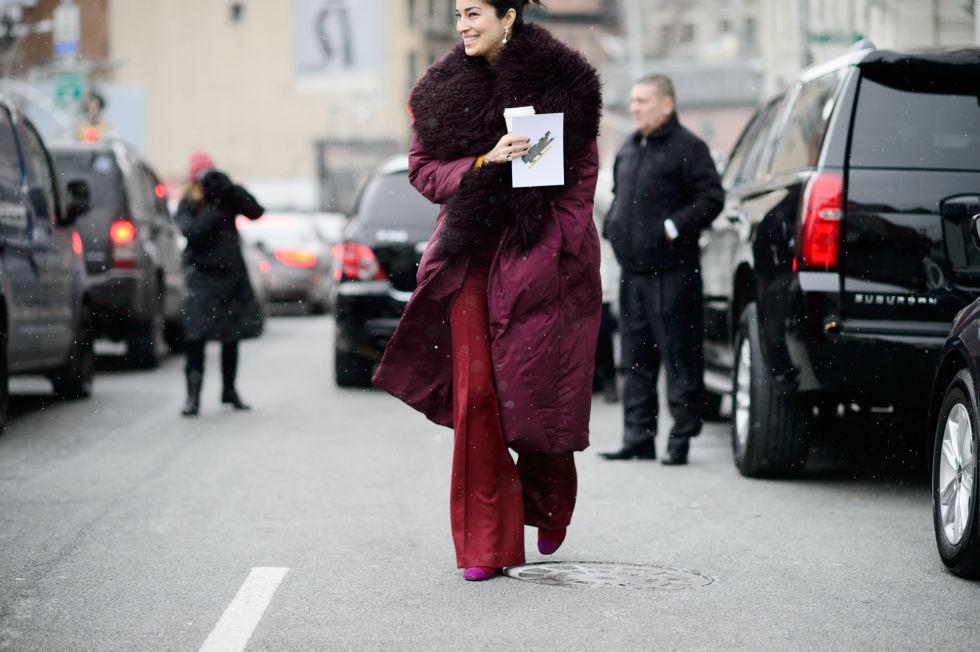

Стилисты и дизайнеры Нью-Йорка, как всегда поразили своими изысканными коллекциями, за которыми следи весь мир.
Считается, что именно Нью-Йорк отличается свои креативным и необычным, даже немного странным видением моды. Но тем интереснее за эти процессом наблюдать.
Самое главное, что должно быть у каждой модницы, по мнению нью-йоркских дизайнеров – это модной пальто в пол. И это несомненный фаворит сезона осень-зима.

Уличная мода Лондона представили миру свои новинки.
Здесь порадовали как привычные известные бренды, так и новые - David Koma, Emilia Wickstead и другие.
При этом лондонский стиль остался вполне узнаваемым. У модников Англии не отнять шароваров, которые имеют яркие и неординарные принты,
волосы зеленого или розового оттенка, а также серег-пончиков.